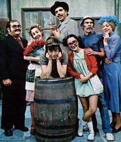

El Chavo del Ocho
El Chavo del Ocho (no Brasil, Chaves), é um seriado de televisão de comédia mexicano escrito, dirigido e estrelado por Roberto Gómez Bolaños com produção da Televisa. Exibido primeiramente no Canal 8 e depois no Canal 2, o roteiro veio de um esquete escrito por Bolaños, em que uma criança de oito anos discutia com um vendedor de balões em um parque. Bolaños deu importância ao desenvolvimento dos personagens, aos quais foram distribuídas personalidades distintas. Desde o início, seu criador percebeu que o seriado seria destinado ao público de todas as idades, mesmo se tratando de adultos interpretando crianças.
Elenco
Roberto Gómez Bolaños, mais conhecido como Chespirito, interpreta o garoto órfão Chaves, pobre, distraído e lento, mas criativo e bem intencionado. Aos oito anos de idade, é um pouco ingênuo, passa a maior parte do seu tempo dentro de barril, ninguém sabe seu nome verdadeiro, por isso o chamam de El Chavo, gíria mexicana que significa "moleque".[19] Quico ou Frederico Mátallas Callando y Corcuéra (Carlos Villagrán) é um menino de nove anos, com bochechas enormes, mimado e superprotegido, além de arrogante, manipulador e invejoso, embora tenha um bom coração. Vive com a ilusão de receber uma bola quadrada e veste um traje de marinheiro, em homenagem ao pai que foi engolido por uma baleia.[19] María Antonieta de las Nieves interpreta a sardenta e esperta Chiquinha (ou Chilindrina "Francisca")[32] e sua bisavó Dona Nieves ou Nieves Frías de Lemón Aguado. Seu Madruga (Ramón Valdés) vive fugindo das cobranças de 14 meses de aluguel, é pai de Chiquinha, está sempre de mau humor por ser alvo das travessuras das crianças e tem um primo chamado Seu Madroga ou Don Román (Germán Robles).[19] Florinda Meza interpreta a romântica, antissocial, impaciente e mal-humorada Florinda Corcuéra y Villalpando viúva de Federico Mátallas Callando ou apenas, Dona Florinda e sua sobrinha egoísta Pópis.[7] Edgar Vivar interpreta o estudioso Nhonho ou Febronio Barriga Gordorritúa e seu pai Zenón Barriga y Pesado, o dono da vila.[19] Horácio Gómez Bolaños interpreta o distraído e solitário Godinez, que é o pior aluno da sala de Professor Girafales (Rubén Aguirre). Clotilde ou Bruxa do 71 (Angelines Fernández) era uma senhora que se vestia como uma bruxa e era apaixonada por Madruga, onde brigava seu amor por Glória (Maribel Fernández, Olivia Leyva e Regina Torné), que vivia com sua sobrinha Paty (Patty Juárez, Rosita Bouchot e Ana Lilian de la Macorra).[7] Mais tarde, Clotilde se apaixonou pelo carteiro Jaiminho (Raúl Padilla).[19] Seguidos da prima de Chiquinha, Malicha (María Luisa Alcalá)[141] e do ladrão Furtado (José Antônio Mena e Ricardo de Pascual).[142]

Episódios
El Chavo teve, entre 1973 e 1980, 312 episódios exibidos, sendo que 273 são distribuídos atualmente pela Televisa, enquanto os outros 39 são considerados "perdidos mundialmente". Desses 39, por sua vez, quatro são exibidos apenas no Brasil pelo SBT e pelo Multishow; são eles "Muitas marteladas — parte 2" (1974), "Ser pintor é uma questão de talento — parte 1" (1976), "Um festival de vizinhos — parte 2" (1976), e "Errar é humano — parte 1" (1978). Gravações caseiras de alguns dos episódios perdidos podem ser encontradas em sites de vídeos na internet.
| Temporada | Episódios | Estréia |
|---|---|---|
| 1ª Temporada | 1 ao 12 | 20/07/1972 |
| 2ª Temporada | 13 ao 20 | 01/12/1973 |
Roteiro e Personagens
Bolaños elaborou um esboço de El Chavo sem seguir uma cronologia com outra história, um garoto pobre de oito anos discutia com um vendedor de balões num parque. Ele interpreta a criança, enquanto o outro personagem recairia a Valdés.
“Quando [Gómez Bolaños] viu a aceitação [do público], descobriu que tinha elementos de comédia muito atrativos e escreveu novamente, mas com uma forma mais espontânea ainda [...] a palavra-chave foi colocá-los [os personagens] em uma vila. Houve um potencial maior e pouco a pouco o armou."
Filho de Roberto Gómez Bolaños